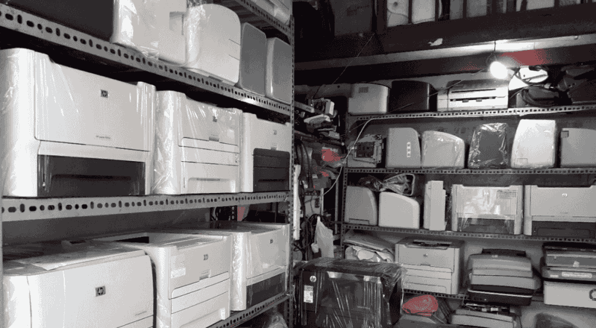

Mua máy in cũ giá cao

CÔNG TY CHUYÊN THU MUA MÁY IN CŨ, QUA ĐỜI, BỂ, NÁT GIÁ CAO.
Một máy in đã qua sử dụng bị hư không sửa được hoặc bể nát thay vì bán ve chai phế liệu được 30-50k hãy gọi ngay cho chúng tôi: 0908 327 123 sẽ có nhân viên tới trực tiếp thu mua, hoặc add zalo 0908 327123 gửi hình ảnh thật tế tình trạng máy sẽ được báo giá chính xác.
Cam đoan giá cao hơn từ 5 – 10 thậm chí 20 lần so với bán ve chai hoặc cho các kỹ thuật mua không cần sử dụng để đó.
Vì mục đích sử dụng lại các linh kiện điện tử bên trong, không phải mục đích chính mua bán máy cũ lại nên cho nên máy bể vỡ vẫn có giá.
Công ty chúng tôi thu mua máy in cũ tại nhà, tận nơi làm việc, cửa hàng kinh doanh, văn phòng, trường học, công ty,… Thu mua máy in cũ khắp 24 quận huyện tp Hồ Chí Minh, ngoài ra chúng tôi còn thu mua máy in cũ ở các tỉnh lân cận như Long An, Bình Dương, Tây Ninh, Cần Thơ, Tiền Giang, Vĩnh Long, và các tỉnh thành khác. Tùy tình hình đường xá cụ thể chúng tôi sẽ có chính sách thu mua phù hợp. Hãy gọi hotline 0908327123 có ZALO để được tư vấn chi tiết nhất có thể.
Quy trình thu mua máy in cũ tại Trường Phát như sau
Chúng tôi luôn quan tâm đến sự hài lòng của khách hàng, nên việc thực hiện thu mua máy in cũ được thực hiện theo quy trình 3 bước ngắn gọn đơn giản sau:
B1. Quý khách gọi điện đến hotline 0908327123 – 0931867301 hoặc nt qua Zalo
B2. Chúng tôi sẽ thẩm định giá ngay lập tức và gọi điện lại
B3. Quý khách đồng ý giá bán, chúng tôi sẽ đến thu mua tiền mặt hoặc chuyển khoản.
Trường Phát là địa chỉ thu mua máy in giá cao tại tp Hồ Chí Minh, bên cạnh việc thu mua máy in, chúng tôi cũng thu mua tất cả các thiết bị tin học văn phòng khác như thu mua máy tính cũ, laptop, máy photocopy..
GỌI NGAY: 0908 327 123

Cần nạp mực hoặc sửa máy in tận nơi? Mực In Trường Phát có mặt trong 30 phút tại TP.HCM — in test trước khi tính tiền, bảo hành 1 tháng.
0908.327.123 · 0819.007.394 (Zalo cả 2 số)